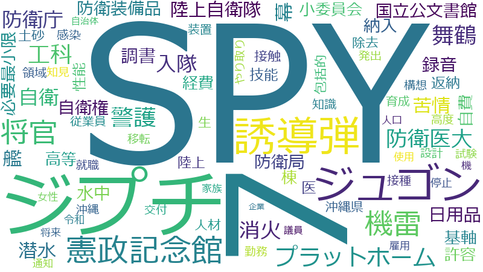

岸信夫

（国家安全保障に関する重要政策及び核軍縮・不拡散問題担当）[現職]
防衛省 、自衛隊 、日米 、強化 、防衛 、能力 、協力 、アメリカ軍 、政府 、安全保障 、対処 、国民 、運用 、側 、連携 、自衛官 、施設 、訓練 、攻撃 、米国 、事態 、部隊 、ミサイル 、サイバー 、技術 、米 、領域 、抑止力 、地域 、同盟 、環境 、接種 、安全 、向上 、整備 、維持 、中国 、支援 、経費 、平和 、輸送 、防衛力 、体制 、情報 、措置 、軍事 、使用 、イージス・アショア 、さ 、令和 、憲法 、観点 、共同 、配備 、任務 、ウクライナ 、基地 、規模 、台湾 、弾道ミサイル 、機 、周辺 、地元 、共同訓練 、拡大 、武力攻撃 、沖縄 、困難 、隊員 、戦略 、普天間飛行場 、変更 、行使 、在日米軍 、推進 、現時点 、負担 、各種 、調査 、万全 、発射 、飛行 、命 、搭載 、海 、規定 、機能 、調達 、国家 、北朝鮮 、派遣 、課題 、安全保障環境 、国際社会 、防衛大臣 、ロシア 、契約 、要件 、武力 、合意
防衛省 、自衛隊 、日米 、防衛 、アメリカ軍 、自衛官 、強化 、イージス・アショア 、ミサイル 、部隊 、能力 、抑止力 、防衛力 、同盟 、攻撃 、サイバー 、安全保障 、訓練 、普天間飛行場 、対処 、共同訓練 、弾道ミサイル 、領域 、米 、米国 、SPY 、武力攻撃 、配備 、軍事 、協力 、隊員 、輸送 、在日米軍 、接種 、任務 、平和 、発射 、敵基地 、誘導弾 、基地 、飛行 、側 、安全保障環境 、事態 、運用 、施設 、搭載 、国民 、政府 、武力 、憲法 、艦 、台湾 、経費 、自衛隊法 、中国 、防衛大臣 、技術 、洋上 、連携 、沖縄 、北朝鮮 、迎撃 、装備品 、宇宙 、自衛 、行使 、攻撃能力 、防衛大綱 、機 、共同 、周辺 、ウクライナ 、向上 、使用 、安全 、代替案 、維持 、海 、邦人 、移設 、艦艇 、領空 、万全 、機動 、環境 、領海 、国際法 、イージスシステム 、防 、地域 、領土 、国際社会 、調達 、電磁波 、さ 、体制 、整備 、インド太平洋 、急速
防衛省
| 言及回数 | 626回 |
| 言及発言者数（参考人を含む） | 359人 |
自衛隊
| 言及回数 | 595回 |
| 言及発言者数（参考人を含む） | 417人 |
日米
| 言及回数 | 552回 |
| 言及発言者数（参考人を含む） | 401人 |
防衛
| 言及回数 | 395回 |
| 言及発言者数（参考人を含む） | 352人 |
アメリカ軍
| 言及回数 | 268回 |
| 言及発言者数（参考人を含む） | 224人 |
自衛官
| 言及回数 | 209回 |
| 言及発言者数（参考人を含む） | 92人 |
強化
| 言及回数 | 513回 |
| 言及発言者数（参考人を含む） | 1286人 |
イージス・アショア
| 言及回数 | 137回 |
| 言及発言者数（参考人を含む） | 40人 |
ミサイル
| 言及回数 | 187回 |
| 言及発言者数（参考人を含む） | 188人 |
部隊
| 言及回数 | 188回 |
| 言及発言者数（参考人を含む） | 194人 |
能力
| 言及回数 | 305回 |
| 言及発言者数（参考人を含む） | 886人 |
抑止力
| 言及回数 | 166回 |
| 言及発言者数（参考人を含む） | 190人 |
防衛力
| 言及回数 | 146回 |
| 言及発言者数（参考人を含む） | 131人 |
同盟
| 言及回数 | 163回 |
| 言及発言者数（参考人を含む） | 200人 |
攻撃
| 言及回数 | 192回 |
| 言及発言者数（参考人を含む） | 362人 |
サイバー
| 言及回数 | 183回 |
| 言及発言者数（参考人を含む） | 322人 |
安全保障
| 言及回数 | 245回 |
| 言及発言者数（参考人を含む） | 677人 |
訓練
| 言及回数 | 195回 |
| 言及発言者数（参考人を含む） | 434人 |
普天間飛行場
| 言及回数 | 103回 |
| 言及発言者数（参考人を含む） | 44人 |
対処
| 言及回数 | 245回 |
| 言及発言者数（参考人を含む） | 745人 |
共同訓練
| 言及回数 | 109回 |
| 言及発言者数（参考人を含む） | 66人 |
弾道ミサイル
| 言及回数 | 114回 |
| 言及発言者数（参考人を含む） | 92人 |
領域
| 言及回数 | 170回 |
| 言及発言者数（参考人を含む） | 375人 |
米
| 言及回数 | 171回 |
| 言及発言者数（参考人を含む） | 419人 |
米国
| 言及回数 | 191回 |
| 言及発言者数（参考人を含む） | 582人 |
SPY
| 言及回数 | 69回 |
| 言及発言者数（参考人を含む） | 14人 |
武力攻撃
| 言及回数 | 107回 |
| 言及発言者数（参考人を含む） | 120人 |
配備
| 言及回数 | 119回 |
| 言及発言者数（参考人を含む） | 182人 |
軍事
| 言及回数 | 141回 |
| 言及発言者数（参考人を含む） | 330人 |
協力
| 言及回数 | 269回 |
| 言及発言者数（参考人を含む） | 1287人 |
隊員
| 言及回数 | 106回 |
| 言及発言者数（参考人を含む） | 132人 |
輸送
| 言及回数 | 146回 |
| 言及発言者数（参考人を含む） | 384人 |
在日米軍
| 言及回数 | 100回 |
| 言及発言者数（参考人を含む） | 116人 |
接種
| 言及回数 | 158回 |
| 言及発言者数（参考人を含む） | 518人 |
任務
| 言及回数 | 117回 |
| 言及発言者数（参考人を含む） | 224人 |
平和
| 言及回数 | 146回 |
| 言及発言者数（参考人を含む） | 434人 |
発射
| 言及回数 | 98回 |
| 言及発言者数（参考人を含む） | 134人 |
敵基地
| 言及回数 | 83回 |
| 言及発言者数（参考人を含む） | 73人 |
誘導弾
| 言及回数 | 66回 |
| 言及発言者数（参考人を含む） | 24人 |
基地
| 言及回数 | 116回 |
| 言及発言者数（参考人を含む） | 259人 |
飛行
| 言及回数 | 98回 |
| 言及発言者数（参考人を含む） | 147人 |
側
| 言及回数 | 214回 |
| 言及発言者数（参考人を含む） | 1068人 |
安全保障環境
| 言及回数 | 91回 |
| 言及発言者数（参考人を含む） | 113人 |
事態
| 言及回数 | 190回 |
| 言及発言者数（参考人を含む） | 876人 |
運用
| 言及回数 | 216回 |
| 言及発言者数（参考人を含む） | 1100人 |
施設
| 言及回数 | 206回 |
| 言及発言者数（参考人を含む） | 1043人 |
搭載
| 言及回数 | 96回 |
| 言及発言者数（参考人を含む） | 150人 |
国民
| 言及回数 | 239回 |
| 言及発言者数（参考人を含む） | 1344人 |
政府
| 言及回数 | 250回 |
| 言及発言者数（参考人を含む） | 1459人 |
武力
| 言及回数 | 87回 |
| 言及発言者数（参考人を含む） | 123人 |
憲法
| 言及回数 | 130回 |
| 言及発言者数（参考人を含む） | 441人 |
艦
| 言及回数 | 78回 |
| 言及発言者数（参考人を含む） | 89人 |
台湾
| 言及回数 | 114回 |
| 言及発言者数（参考人を含む） | 349人 |
経費
| 言及回数 | 148回 |
| 言及発言者数（参考人を含む） | 692人 |
自衛隊法
| 言及回数 | 73回 |
| 言及発言者数（参考人を含む） | 84人 |
中国
| 言及回数 | 149回 |
| 言及発言者数（参考人を含む） | 748人 |
防衛大臣
| 言及回数 | 89回 |
| 言及発言者数（参考人を含む） | 191人 |
技術
| 言及回数 | 181回 |
| 言及発言者数（参考人を含む） | 1096人 |
洋上
| 言及回数 | 72回 |
| 言及発言者数（参考人を含む） | 100人 |
連携
| 言及回数 | 210回 |
| 言及発言者数（参考人を含む） | 1430人 |
沖縄
| 言及回数 | 107回 |
| 言及発言者数（参考人を含む） | 392人 |
北朝鮮
| 言及回数 | 93回 |
| 言及発言者数（参考人を含む） | 271人 |
迎撃
| 言及回数 | 58回 |
| 言及発言者数（参考人を含む） | 46人 |
装備品
| 言及回数 | 66回 |
| 言及発言者数（参考人を含む） | 83人 |
宇宙
| 言及回数 | 81回 |
| 言及発言者数（参考人を含む） | 188人 |
自衛
| 言及回数 | 61回 |
| 言及発言者数（参考人を含む） | 64人 |
行使
| 言及回数 | 101回 |
| 言及発言者数（参考人を含む） | 385人 |
攻撃能力
| 言及回数 | 62回 |
| 言及発言者数（参考人を含む） | 73人 |
防衛大綱
| 言及回数 | 55回 |
| 言及発言者数（参考人を含む） | 49人 |
機
| 言及回数 | 113回 |
| 言及発言者数（参考人を含む） | 565人 |
共同
| 言及回数 | 122回 |
| 言及発言者数（参考人を含む） | 688人 |
周辺
| 言及回数 | 112回 |
| 言及発言者数（参考人を含む） | 581人 |
ウクライナ
| 言及回数 | 116回 |
| 言及発言者数（参考人を含む） | 631人 |
向上
| 言及回数 | 155回 |
| 言及発言者数（参考人を含む） | 1102人 |
使用
| 言及回数 | 139回 |
| 言及発言者数（参考人を含む） | 918人 |
安全
| 言及回数 | 156回 |
| 言及発言者数（参考人を含む） | 1122人 |
代替案
| 言及回数 | 48回 |
| 言及発言者数（参考人を含む） | 29人 |
維持
| 言及回数 | 151回 |
| 言及発言者数（参考人を含む） | 1070人 |
海
| 言及回数 | 96回 |
| 言及発言者数（参考人を含む） | 427人 |
邦人
| 言及回数 | 71回 |
| 言及発言者数（参考人を含む） | 191人 |
移設
| 言及回数 | 54回 |
| 言及発言者数（参考人を含む） | 67人 |
艦艇
| 言及回数 | 51回 |
| 言及発言者数（参考人を含む） | 54人 |
領空
| 言及回数 | 56回 |
| 言及発言者数（参考人を含む） | 83人 |
万全
| 言及回数 | 98回 |
| 言及発言者数（参考人を含む） | 510人 |
機動
| 言及回数 | 53回 |
| 言及発言者数（参考人を含む） | 70人 |
環境
| 言及回数 | 161回 |
| 言及発言者数（参考人を含む） | 1353人 |
領海
| 言及回数 | 66回 |
| 言及発言者数（参考人を含む） | 173人 |
国際法
| 言及回数 | 70回 |
| 言及発言者数（参考人を含む） | 212人 |
イージスシステム
| 言及回数 | 40回 |
| 言及発言者数（参考人を含む） | 18人 |
防
| 言及回数 | 61回 |
| 言及発言者数（参考人を含む） | 134人 |
地域
| 言及回数 | 165回 |
| 言及発言者数（参考人を含む） | 1429人 |
領土
| 言及回数 | 68回 |
| 言及発言者数（参考人を含む） | 209人 |
国際社会
| 言及回数 | 90回 |
| 言及発言者数（参考人を含む） | 470人 |
調達
| 言及回数 | 95回 |
| 言及発言者数（参考人を含む） | 546人 |
電磁波
| 言及回数 | 44回 |
| 言及発言者数（参考人を含む） | 38人 |
さ
| 言及回数 | 131回 |
| 言及発言者数（参考人を含む） | 1072人 |
体制
| 言及回数 | 143回 |
| 言及発言者数（参考人を含む） | 1240人 |
整備
| 言及回数 | 152回 |
| 言及発言者数（参考人を含む） | 1366人 |
インド太平洋
| 言及回数 | 61回 |
| 言及発言者数（参考人を含む） | 163人 |
急速
| 言及回数 | 85回 |
| 言及発言者数（参考人を含む） | 446人 |
防衛省
| 言及回数 | 626回 |
| 言及発言者数（参考人を含む） | 359人 |
自衛隊
| 言及回数 | 595回 |
| 言及発言者数（参考人を含む） | 417人 |
日米
| 言及回数 | 552回 |
| 言及発言者数（参考人を含む） | 401人 |
強化
| 言及回数 | 513回 |
| 言及発言者数（参考人を含む） | 1286人 |
防衛
| 言及回数 | 395回 |
| 言及発言者数（参考人を含む） | 352人 |
能力
| 言及回数 | 305回 |
| 言及発言者数（参考人を含む） | 886人 |
協力
| 言及回数 | 269回 |
| 言及発言者数（参考人を含む） | 1287人 |
アメリカ軍
| 言及回数 | 268回 |
| 言及発言者数（参考人を含む） | 224人 |
政府
| 言及回数 | 250回 |
| 言及発言者数（参考人を含む） | 1459人 |
安全保障
| 言及回数 | 245回 |
| 言及発言者数（参考人を含む） | 677人 |
対処
| 言及回数 | 245回 |
| 言及発言者数（参考人を含む） | 745人 |
国民
| 言及回数 | 239回 |
| 言及発言者数（参考人を含む） | 1344人 |
運用
| 言及回数 | 216回 |
| 言及発言者数（参考人を含む） | 1100人 |
側
| 言及回数 | 214回 |
| 言及発言者数（参考人を含む） | 1068人 |
連携
| 言及回数 | 210回 |
| 言及発言者数（参考人を含む） | 1430人 |
自衛官
| 言及回数 | 209回 |
| 言及発言者数（参考人を含む） | 92人 |
施設
| 言及回数 | 206回 |
| 言及発言者数（参考人を含む） | 1043人 |
訓練
| 言及回数 | 195回 |
| 言及発言者数（参考人を含む） | 434人 |
攻撃
| 言及回数 | 192回 |
| 言及発言者数（参考人を含む） | 362人 |
米国
| 言及回数 | 191回 |
| 言及発言者数（参考人を含む） | 582人 |
事態
| 言及回数 | 190回 |
| 言及発言者数（参考人を含む） | 876人 |
部隊
| 言及回数 | 188回 |
| 言及発言者数（参考人を含む） | 194人 |
ミサイル
| 言及回数 | 187回 |
| 言及発言者数（参考人を含む） | 188人 |
サイバー
| 言及回数 | 183回 |
| 言及発言者数（参考人を含む） | 322人 |
技術
| 言及回数 | 181回 |
| 言及発言者数（参考人を含む） | 1096人 |
米
| 言及回数 | 171回 |
| 言及発言者数（参考人を含む） | 419人 |
領域
| 言及回数 | 170回 |
| 言及発言者数（参考人を含む） | 375人 |
抑止力
| 言及回数 | 166回 |
| 言及発言者数（参考人を含む） | 190人 |
地域
| 言及回数 | 165回 |
| 言及発言者数（参考人を含む） | 1429人 |
同盟
| 言及回数 | 163回 |
| 言及発言者数（参考人を含む） | 200人 |
環境
| 言及回数 | 161回 |
| 言及発言者数（参考人を含む） | 1353人 |
接種
| 言及回数 | 158回 |
| 言及発言者数（参考人を含む） | 518人 |
安全
| 言及回数 | 156回 |
| 言及発言者数（参考人を含む） | 1122人 |
向上
| 言及回数 | 155回 |
| 言及発言者数（参考人を含む） | 1102人 |
整備
| 言及回数 | 152回 |
| 言及発言者数（参考人を含む） | 1366人 |
維持
| 言及回数 | 151回 |
| 言及発言者数（参考人を含む） | 1070人 |
中国
| 言及回数 | 149回 |
| 言及発言者数（参考人を含む） | 748人 |
支援
| 言及回数 | 148回 |
| 言及発言者数（参考人を含む） | 1519人 |
経費
| 言及回数 | 148回 |
| 言及発言者数（参考人を含む） | 692人 |
平和
| 言及回数 | 146回 |
| 言及発言者数（参考人を含む） | 434人 |
輸送
| 言及回数 | 146回 |
| 言及発言者数（参考人を含む） | 384人 |
防衛力
| 言及回数 | 146回 |
| 言及発言者数（参考人を含む） | 131人 |
体制
| 言及回数 | 143回 |
| 言及発言者数（参考人を含む） | 1240人 |
情報
| 言及回数 | 142回 |
| 言及発言者数（参考人を含む） | 1383人 |
措置
| 言及回数 | 141回 |
| 言及発言者数（参考人を含む） | 1345人 |
軍事
| 言及回数 | 141回 |
| 言及発言者数（参考人を含む） | 330人 |
使用
| 言及回数 | 139回 |
| 言及発言者数（参考人を含む） | 918人 |
イージス・アショア
| 言及回数 | 137回 |
| 言及発言者数（参考人を含む） | 40人 |
さ
| 言及回数 | 131回 |
| 言及発言者数（参考人を含む） | 1072人 |
令和
| 言及回数 | 131回 |
| 言及発言者数（参考人を含む） | 1331人 |
憲法
| 言及回数 | 130回 |
| 言及発言者数（参考人を含む） | 441人 |
観点
| 言及回数 | 127回 |
| 言及発言者数（参考人を含む） | 1500人 |
共同
| 言及回数 | 122回 |
| 言及発言者数（参考人を含む） | 688人 |
配備
| 言及回数 | 119回 |
| 言及発言者数（参考人を含む） | 182人 |
任務
| 言及回数 | 117回 |
| 言及発言者数（参考人を含む） | 224人 |
ウクライナ
| 言及回数 | 116回 |
| 言及発言者数（参考人を含む） | 631人 |
基地
| 言及回数 | 116回 |
| 言及発言者数（参考人を含む） | 259人 |
規模
| 言及回数 | 115回 |
| 言及発言者数（参考人を含む） | 1153人 |
台湾
| 言及回数 | 114回 |
| 言及発言者数（参考人を含む） | 349人 |
弾道ミサイル
| 言及回数 | 114回 |
| 言及発言者数（参考人を含む） | 92人 |
機
| 言及回数 | 113回 |
| 言及発言者数（参考人を含む） | 565人 |
周辺
| 言及回数 | 112回 |
| 言及発言者数（参考人を含む） | 581人 |
地元
| 言及回数 | 110回 |
| 言及発言者数（参考人を含む） | 838人 |
共同訓練
| 言及回数 | 109回 |
| 言及発言者数（参考人を含む） | 66人 |
拡大
| 言及回数 | 107回 |
| 言及発言者数（参考人を含む） | 1225人 |
武力攻撃
| 言及回数 | 107回 |
| 言及発言者数（参考人を含む） | 120人 |
沖縄
| 言及回数 | 107回 |
| 言及発言者数（参考人を含む） | 392人 |
困難
| 言及回数 | 106回 |
| 言及発言者数（参考人を含む） | 1113人 |
隊員
| 言及回数 | 106回 |
| 言及発言者数（参考人を含む） | 132人 |
戦略
| 言及回数 | 103回 |
| 言及発言者数（参考人を含む） | 731人 |
普天間飛行場
| 言及回数 | 103回 |
| 言及発言者数（参考人を含む） | 44人 |
変更
| 言及回数 | 101回 |
| 言及発言者数（参考人を含む） | 879人 |
行使
| 言及回数 | 101回 |
| 言及発言者数（参考人を含む） | 385人 |
在日米軍
| 言及回数 | 100回 |
| 言及発言者数（参考人を含む） | 116人 |
推進
| 言及回数 | 100回 |
| 言及発言者数（参考人を含む） | 1342人 |
現時点
| 言及回数 | 100回 |
| 言及発言者数（参考人を含む） | 855人 |
負担
| 言及回数 | 100回 |
| 言及発言者数（参考人を含む） | 1112人 |
各種
| 言及回数 | 99回 |
| 言及発言者数（参考人を含む） | 656人 |
調査
| 言及回数 | 99回 |
| 言及発言者数（参考人を含む） | 1389人 |
万全
| 言及回数 | 98回 |
| 言及発言者数（参考人を含む） | 510人 |
発射
| 言及回数 | 98回 |
| 言及発言者数（参考人を含む） | 134人 |
飛行
| 言及回数 | 98回 |
| 言及発言者数（参考人を含む） | 147人 |
命
| 言及回数 | 97回 |
| 言及発言者数（参考人を含む） | 689人 |
搭載
| 言及回数 | 96回 |
| 言及発言者数（参考人を含む） | 150人 |
海
| 言及回数 | 96回 |
| 言及発言者数（参考人を含む） | 427人 |
規定
| 言及回数 | 96回 |
| 言及発言者数（参考人を含む） | 1226人 |
機能
| 言及回数 | 95回 |
| 言及発言者数（参考人を含む） | 1146人 |
調達
| 言及回数 | 95回 |
| 言及発言者数（参考人を含む） | 546人 |
国家
| 言及回数 | 94回 |
| 言及発言者数（参考人を含む） | 790人 |
北朝鮮
| 言及回数 | 93回 |
| 言及発言者数（参考人を含む） | 271人 |
派遣
| 言及回数 | 93回 |
| 言及発言者数（参考人を含む） | 645人 |
課題
| 言及回数 | 93回 |
| 言及発言者数（参考人を含む） | 1476人 |
安全保障環境
| 言及回数 | 91回 |
| 言及発言者数（参考人を含む） | 113人 |
国際社会
| 言及回数 | 90回 |
| 言及発言者数（参考人を含む） | 470人 |
防衛大臣
| 言及回数 | 89回 |
| 言及発言者数（参考人を含む） | 191人 |
ロシア
| 言及回数 | 88回 |
| 言及発言者数（参考人を含む） | 637人 |
契約
| 言及回数 | 88回 |
| 言及発言者数（参考人を含む） | 771人 |
要件
| 言及回数 | 88回 |
| 言及発言者数（参考人を含む） | 854人 |
武力
| 言及回数 | 87回 |
| 言及発言者数（参考人を含む） | 123人 |
合意
| 言及回数 | 86回 |
| 言及発言者数（参考人を含む） | 662人 |